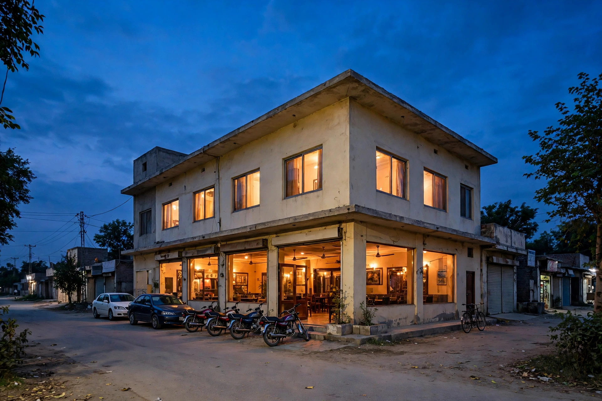

Few searches are as immediate as food and lodging. A family travelling through Mianwali wants a decent meal and a clean room. A group of friends in the city wants somewhere good to eat tonight. A worker wants a reliable place for lunch near the bazaar. In each case the phone comes out, a short search is made, and the decision often takes less time than ordering tea.
For hotels, restaurants and food businesses, SEO is therefore about the decision moment: accurate hours, appetising but honest photos, a readable menu or clear room information, recent reviews, and a phone number that works. Get those right and you collect customers who were never going to drive around comparing places in person.
Serve Two Audiences: Travellers and Locals
Travellers and locals search differently. A traveller cares about location, parking, room basics and whether they can call ahead late in the day. A local cares about menu favourites, family seating, takeaway, and whether the place suits a gathering. Your pages should answer both sets of questions without mixing them into confusion.
For a hotel, that means a clear page for rooms and facilities, directions that make sense to someone arriving from outside, and honest photos of real rooms. For a restaurant, it means a menu in readable text, opening hours people can trust, and a simple explanation of dine-in, takeaway or booking arrangements where you offer them.

Make Photos and Menus Do Real Work
In food and hospitality, photos are not decoration; they are evidence. Show the dining area, the entrance, a room as a guest will actually find it, and a small selection of signature dishes photographed in good light. Avoid stock pictures that promise a place you do not have, because the disappointment will return as a poor review.
- Publish the main menu as readable text, not only as an image.
- Update hours for holidays and seasonal changes on Google first.
- Add new photos when rooms, seating or the frontage change.
- State clearly how bookings or orders are taken, by phone or in person.
Your Google profile carries much of this work, so pair this guide with our Mianwali Google Maps guide for the profile routine.
Reviews Shape the Meal and the Booking
Guests lean heavily on reviews because they cannot test a meal or a room in advance. Recent reviews that mention cleanliness, taste, staff behaviour and value help strangers decide with confidence. Reply to them, especially the critical ones, with the calm routine described in our Mianwali reviews guide: thank, acknowledge, invite direct contact, and never argue in public.
Look for patterns, too. If travellers repeatedly praise your location but mention parking confusion, add clear parking guidance to your page and profile. If locals love a dish, make sure it is easy to find on the menu page. Reviews tell you what your next website improvement should be.
Keep Hours, Contact and Location Impeccable
A restaurant that shows open when it is closed, or a hotel whose phone goes unanswered at the hour a traveller calls, loses more than one booking. It loses the review and the recommendation that booking might have produced. Treat your online hours as a promise, update them before holidays and events, and check that directions bring guests to the right entrance.
For structured support, our SEO services in Mianwali page explains the services available. Zaheer Seo Expert is based in Layyah and has no office in Mianwali, so hotels and restaurants in Mianwali are served from Layyah, with all SEO work handled online and by phone.
Build a Small, Steady Content Habit
You do not need long articles every week. A short page about your family seating, a note when the menu changes with the season, fresh photos after a renovation, and prompt review replies will keep your presence current. Seasonal moments matter in hospitality, such as busy travel periods and family celebration seasons, so prepare updates before them rather than during the rush.
Hospitality is also seasonal in its questions. Travellers ask about late arrival and parking, families ask about seating for gatherings, and regulars ask whether a favourite dish is available this week. Answering those questions on your pages and profile, before they are asked on the phone, saves staff time and wins bookings while competitors are still being searched.
Mianwali sits on routes and routines that bring a steady flow of hungry and tired people. SEO makes sure that when those people search, your hotel or restaurant is easy to find, easy to judge and easy to choose.
Frequently Asked Questions
What do travellers look for first when choosing a hotel in Mianwali?
Usually location, clear photos of real rooms, recent reviews, and an easy way to call and ask about availability. Put those first on your profile and website, and keep room information honest and current.
Should a restaurant publish its full menu online?
Publishing your main menu in readable text helps customers decide and helps search engines understand what you serve. Keep it updated when dishes or timings change, and do not rely only on a blurry photo of a printed menu.
How should a food business reply to a review about a bad meal?
Reply calmly, thank the customer for the feedback, apologise for the poor experience without arguing, and invite them to contact you directly. Future readers judge your attitude as much as the complaint.
Is Zaheer Seo Expert located in Mianwali for hotel work?
No. Zaheer Seo Expert is based in Layyah and has no office in Mianwali. SEO work for Mianwali hotels and restaurants is done online and by phone from Layyah.
Want More Customers From Google?
Call 0327 7350830 or email seozaheer14@gmail.com. Zaheer Seo Expert, Layyah - Rajan Shah Road, Rana Nagar, Chak 116 TDA, Pakistan. Open 24 hours.
Get Your SEO Strategy →